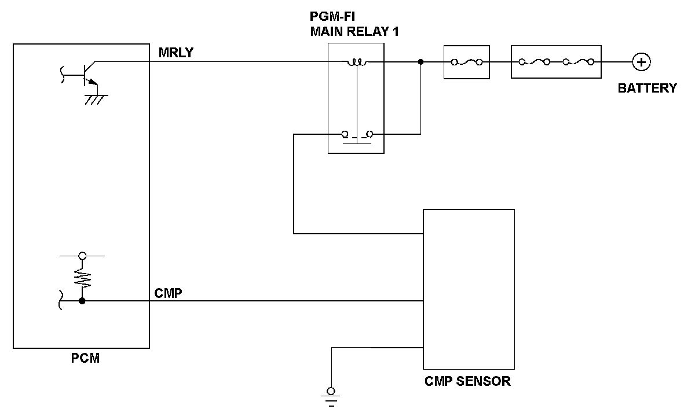
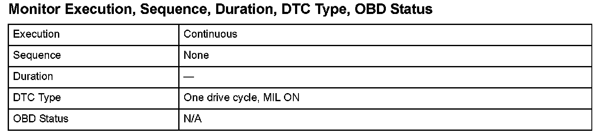
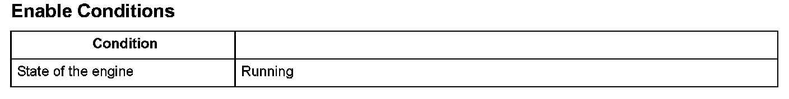

PGM-FI System
DTC P0344: Camshaft Position (CMP) Sensor Circuit Intermittent Interruption
General Description
The camshaft position (CMP) sensor detects the intake camshaft timing and sends pulsing signals to the powertrain control module (PCM). The PCM determines the camshaft position according to the signals from the crankshaft position (CKP) sensor and the CMP sensor. If the number of pulsing signals from the CMP sensor during intervals between the CKP standard pulses is more or less than the proper number, a malfunction is detected and a DTC is stored.

Monitor Execution, Sequence, Duration, DTC Type, OBD Status

Enable Conditions
Malfunction Threshold
More or less than two CMP sensor pulses are detected during intervals between the CKP standard pulses. This condition occurs at least 30 times.
Diagnosis Details
Conditions for illuminating the MIL
When a malfunction is detected, the MIL comes on and the DTC and the freeze frame data are stored in the PCM memory.
Conditions for clearing the MIL
The MIL will be cleared if the malfunction does not recur during three consecutive trips in which the diagnostic runs.
The MIL, the DTC, and the freeze frame data can be cleared by using the scan tool Clear command or by disconnecting the battery.